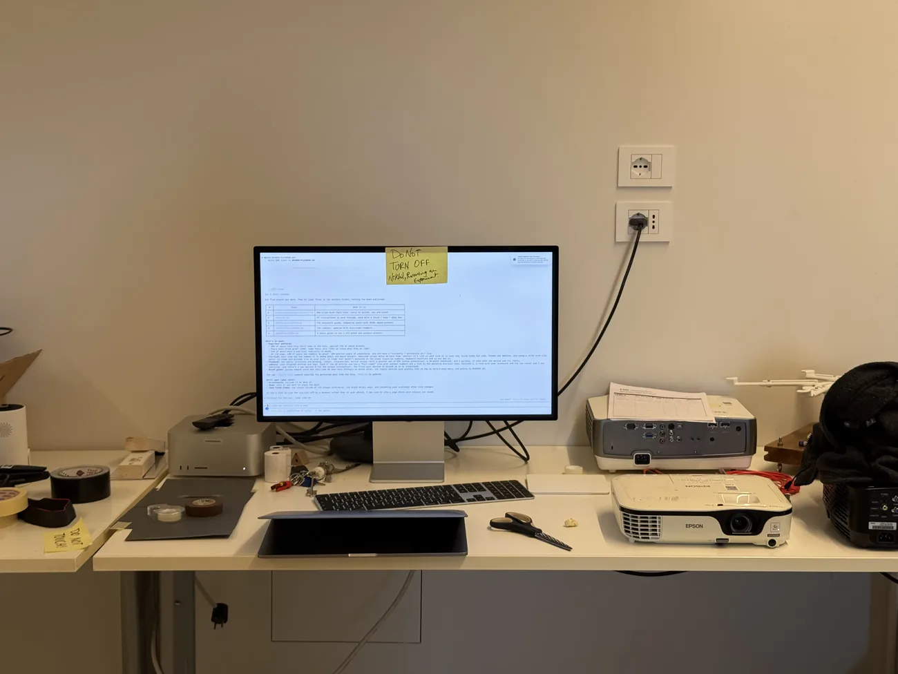
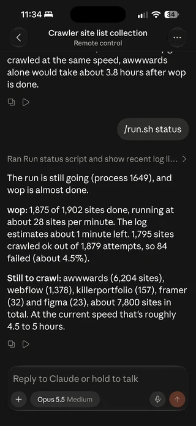

Just ask it I say
13 Oct 2026
I built a data set of 9,000 portfolios so Claude could show me the things I hadn’t thought of.
Introduction
While creating (more vibe coding than designing) my portfolio the past few days I kept getting stuck on what new elements I could bring to it to make it fun, interactive and memorable. So I remembered a legendary designer in a class saying “Just ask it I say” (in a very British accent). I could just ask Claude to make iterations on what I already had. The outputs were fine, but they were missing the key thing we actually do, which is look at other designers’ portfolios for inspiration.
The plan
So I felt I needed a database of the best design portfolios in the world. My hypothesis was that with a data set of trends from them, I could get more interaction iterations out of Claude Code.
I listed the sites that collect, award or feature portfolios: Awwwards, Wall of Portfolios, SiteInspire, Webflow, Framer, Figma and Killer Portfolio. Then I told Claude to crawl them from 2020 to 2026, so the data would be as relevant as I could make it.
The Crawl
I tried the crawl on my laptop first but it was slow, and I couldn’t use it for anything else while it ran. So I borrowed a bigger computer.
The crawl set up - The computer was something I couldn’t carry around, so the script ran locally on it while I checked in from my phone through Claude Code Remote Control.


It ran from 7 to 9 October across seven galleries. After that it went back over 275 of the sites and recorded video of each interaction, timed every hover and opened each one on a phone.
The Crawl output, what came back
The galleries listed just over 10,000 pages between them. Each site counts once even when three galleries listed it, so that left 9,186 live sites. Of those, 4,254 were selling a person or a studio, which is the part I cared about.
Claude split them into two groups:
- Peers: 1,489 product, UX, UI and interaction designer portfolios. This is what’s normal for people like me looking for a job.
- Award winners: 781 sites that won an Awwwards award in 2020 or later. This is the craft ceiling.
What came out was a set of documents rather than one big spreadsheet:
- a Portfolio Playbook on structure, layout, interactions and motion values
- a Try-list of 97 interactions with values and build recipes
- unique interactions from 293 sites
- copy patterns, and a scorecard of my site against the peers
What surprised me - juries and recruiters want different things. Juries reward immersive sites. Recruiters just want clarity. Sound is the strongest jury signal in the data and only 1% of designers use it. Juries score resume links down, while 62% of peers have one. My site scored 100% on the basics and 70% on hiring content.
Re Run of iteration experiments
Round one
I gave Claude the playbook and asked for a version of my homepage with every interaction that could work on it. It came back with 16: the project thumbnail morphing into the case study hero, arrows sliding in on hover, copy email with post-it confetti, a sound toggle, a live Copenhagen clock (Claude thinks I live in Copenhagen because my school CIID has it in the name), scroll reveals in pure CSS.
It also wrote down what it was leaving out and why. WebGL, 3D, shaders and preloaders were all out for being heavy and against the mono look of the site. It built an index page so each experiment opens on its own, and a compare page putting V1 and V2 side by side.
Why only 16? - I expected more out of 9,000 sites, so I asked. Claude had filtered hard: it skipped the richest file, the 293 unique interactions, and built one take on each idea instead of several. It had read the data fine. I just hadn’t told it what I wanted out of it.
Round Two
So the second time I told it what I actually wanted. Make the dots more alive and more fun, play with the copy, try different layouts, and go bonkers.
Nothing about the data had changed. This time it built 51 experiments in 10 groups:
- dot games: Snake, Game of Life, whack-a-dot, a music sequencer
- a little pet that lives in the grid
- the name glitching and waving
- six hero copy options and four contact labels, each with a ✓ works / ✕ risk verdict from the crawl data
- seven layouts
- playable mini versions of two of my case studies
It also made five presets that mix them together, from Calm to Bonkers. Those are the easiest way in.
Conclusion, Did it help me?
It helped. Having the data set meant I had a clear list of things to try when I’d run out of my own ideas, and it brought back things I could do with what I already had.
The part I didn’t expect was how much the asking mattered. The same crawl gave me 16 experiments the first time and 51 the second, and the only thing that changed in between was how much direction I gave. The data was the ceiling, and how much I asked for decided how close I got to it.
Does this work for everyone? There’s enough data here to start from. Now it’s on me, or anyone else who wants to try it, to actually use it on a portfolio.
So “just ask it I say” was right. It just mattered more than I thought what I asked for.